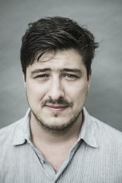
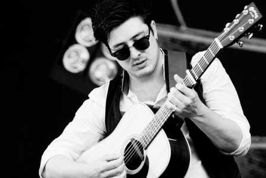

Early life
Marcus Oliver Johnstone Mumford was born on January 31, 1987, in Anaheim,
California, and found fame and acclaim as the frontman for the folk-influenced rock quartet
Mumford & Sons.
Mumford was exposed to a broad range of musical influences.
One of the first records he listened to was his
mother's copy of
Bob Dylan's Slow Train Coming (1979). As a teenager, Mumford was
also strongly moved by the
bluegrass-imbued soundtrack
for the film O Brother, Where Art Thou? (2000).

Mumford & sons
Mumford appeared at the Grammy Awards with his band in 2011.
The group performed "The Cave" and served as a back-up band for Bob Dylan.
The chance to work with Dylan was a dream come true for Mumford. As he explained
to Entertainment Weekly, "When our manager said, 'It's Bob Dylan,' I got out
of bed and ran outside and jumped around like a madman!"
In 2012, Mumford enjoyed another surge of popularity with his band's next release, Babel.
In its first week of release, the album sold more than 600,000 copies. The recording was
a critical success as well. The band picked up the Grammy Award for Album of the Year for Babel.
